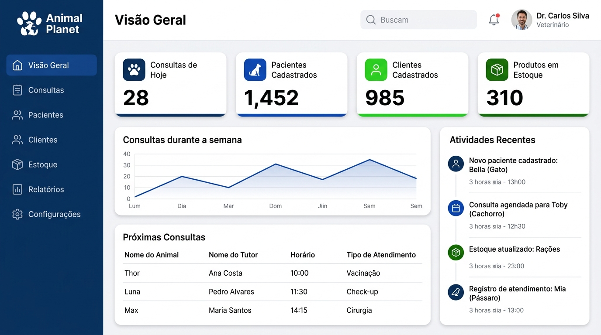

flag
Objetivo
Facilitar a administração e a organização das clínicas veterinárias.
Organize consultas, acompanhe seus pacientes e controle informações importantes da sua clínica em um só lugar. Tenha mais praticidade na rotina e mais tempo para cuidar dos animais.
Agenda organizada Consultas em ordem
Histórico dos pets Informações centralizadas
Controle de estoque Mais praticidade

O Animal Planet é um sistema de gestão desenvolvido especialmente para clínicas veterinárias. Sua proposta é simplificar tarefas administrativas e reunir informações importantes em um único ambiente.
Com ferramentas para organizar consultas, acompanhar pacientes e controlar o estoque, a plataforma busca facilitar o dia a dia dos profissionais e contribuir para um atendimento mais organizado.
Facilitar a administração e a organização das clínicas veterinárias.
Veterinários, recepcionistas e equipes de clínicas veterinárias.
Conheça alguns recursos que ajudam a tornar a gestão veterinária mais simples e organizada.
Organize os horários, acompanhe os agendamentos e tenha uma visão mais clara dos atendimentos.
Reúna informações dos animais, como histórico, consultas, vacinas e tratamentos.
Acompanhe os produtos, medicamentos e materiais utilizados na clínica.
Organize os dados dos tutores e associe cada cliente aos seus respectivos animais.
Consulte informações importantes da clínica por meio de um painel centralizado.
Mantenha os dados dos atendimentos reunidos para facilitar as consultas futuras.
O Animal Planet reúne etapas importantes da rotina veterinária em um fluxo simples.
Registre os dados dos tutores e as informações dos animais atendidos pela clínica.
Registre consultas e acompanhe os compromissos da rotina veterinária.
Consulte prontuários e acompanhe os materiais e produtos da clínica.
Reúna informações e tarefas importantes em um único sistema.
Facilite o acesso aos dados e a organização dos atendimentos.
Consulte informações dos pacientes e da clínica em um só ambiente.
Uma rotina organizada ajuda a equipe a dedicar mais atenção aos animais.
Conheça o Animal Planet e descubra como facilitar a rotina da sua clínica veterinária.
Tem alguma dúvida ou sugestão? Envie uma mensagem.